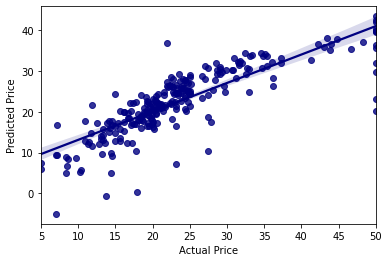
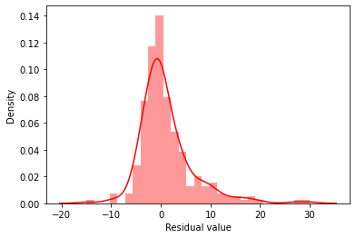
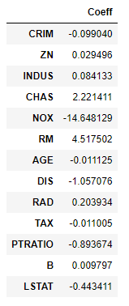

House Price Prediction
A Linear Regression model to predict house prices
This project was my first experience with building a machine learning model off a real world
dataset. I built a Linear Regression based model to predict the house price and to what extent each data point affects
the price of the house.
The model was built based on the Boston Housing Dataset. This dataset is a derived from information collected by the U.S. Census Service concerning housing in the area of Boston MA. The following were the data points that describe the dataset columns:
CRIM- per capita crime rate by town
ZN- proportion of residential land zoned for lots over 25,000 sq.ft.
INDUS- proportion of non-retail business acres per town.
CHAS- Charles River dummy variable (1 if tract bounds river; 0 otherwise)
NOX- nitric oxides concentration (parts per 10 million)
RM- average number of rooms per dwelling
AGE- proportion of owner-occupied units built prior to 1940
DIS- weighted distances to five Boston employment centres
RAD- index of accessibility to radial highways
TAX- full-value property-tax rate per $10,000
PTRATIO- pupil-teacher ratio by town
B- 1000(Bk - 0.63)^2 where Bk is the proportion of blacks by town
LSTAT- % lower status of the population
MEDV- Median value of owner-occupied homes in $1000's
This is a copy of UCI ML housing dataset(link)
The Boston Housing Data Set
The model was built based on the Boston Housing Dataset. This dataset is a derived from information collected by the U.S. Census Service concerning housing in the area of Boston MA. The following were the data points that describe the dataset columns:
CRIM- per capita crime rate by town
ZN- proportion of residential land zoned for lots over 25,000 sq.ft.
INDUS- proportion of non-retail business acres per town.
CHAS- Charles River dummy variable (1 if tract bounds river; 0 otherwise)
NOX- nitric oxides concentration (parts per 10 million)
RM- average number of rooms per dwelling
AGE- proportion of owner-occupied units built prior to 1940
DIS- weighted distances to five Boston employment centres
RAD- index of accessibility to radial highways
TAX- full-value property-tax rate per $10,000
PTRATIO- pupil-teacher ratio by town
B- 1000(Bk - 0.63)^2 where Bk is the proportion of blacks by town
LSTAT- % lower status of the population
MEDV- Median value of owner-occupied homes in $1000's
This is a copy of UCI ML housing dataset(link)
Insights
Predicted vs Actual

The above figure shows a comparison between the predicted data and the actual testing data. In the figure it is evident majority of the predicted values directly correlate with the actual test data values, indicating that the model was a good fit. All prices in $1000's.
Residuals

The figure above is a histogram of the residuals. Residuals are obtained by subtracting the testing data from the corresponding test data. For this particular model, the residuals appear to be normally distributed i.e the density of residuals is highest at zero. This indicates that the model is fairly accurate.
Coefficients

The adjoining table provides the 'weightage' of each data point (x $1000 on the house rate). In other words, the amount of influence each factor has on the price of the house.
For instance, holding all other features fixed, a 1 unit increase in AGE is associated with a DECREASE of $11.152 on the overall price of the house.
Similarly, holding all other features fixed, a 1 unit increase in RM(avg. no. of rooms per dwelling) is associated with a INCREASE of $4517.502 on the overall price of the house.
Tech Stack
Jupyter Notebook
scikit-learn
MatPlotlib
NumPy
Pandas